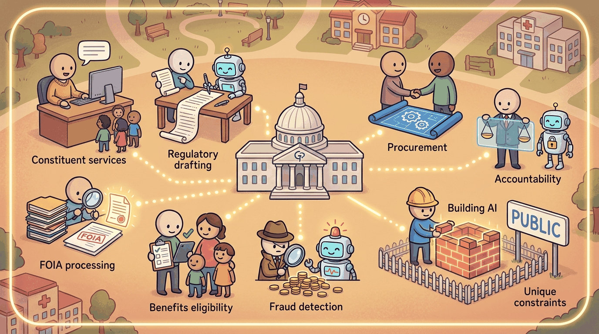

a Kurzgesagt-meets-XKCD visual metaphor with friendly characters and clear iconography, capturing the theme: Constituent services, regulatory drafting, FOIA processing, benefits eligibility, fraud...Government AI sits in a peculiar position: enormous potential value (every form, every benefits determination, every regulation touches millions of people) and uniquely high constraints (administrative-law due process, public-records obligations, procurement timelines longer than a model's shelf life). Successful public-sector LLM deployments in 2025-2026 share a common shape: narrow scope, conservative model choice, aggressive human-in-the-loop, and explicit accountability for who decided what when something goes wrong. Pilots that ignored any of those four invariably ended up in the news.
The U.S. federal anchor is OpenAI's ChatGPT Gov (Jan 2025), a tenant designed for U.S. federal employees, alongside the GSA's GovGPT pilot for procurement-Q&A. The UK anchor is the GDS GOV.UK Chat pilot (2024), which tested a grounded assistant against guidance pages. A concrete deployment-without-headlines example is the IRS Direct File pilot (2024), where LLM-assisted tax-code lookups stayed strictly in support, not adjudication, of taxpayer decisions: the boundary that keeps administrative-law due-process objections at bay.
Section 56.1 walks through the use cases that ship. Section 56.2 covers the failure modes. Section 56.3 covers OMB M-24-10, FedRAMP, and the broader regulatory framework. Section 56.4 walks through the public-sector grounded-assistant architecture. Section 56.5 closes with vendors and postmortems.
Sections in This Chapter
What Comes Next
Government produced the strict-grounded-retrieval pattern that, in the next chapter, takes the parallel form of OT-isolation in manufacturing. Chapter 57 covers the industry where the human-in-the-loop boundary is between IT and OT zones rather than between administrative-law decisions.